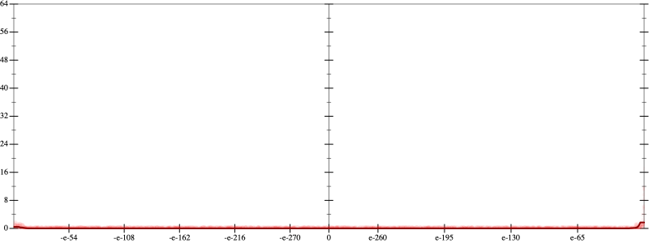
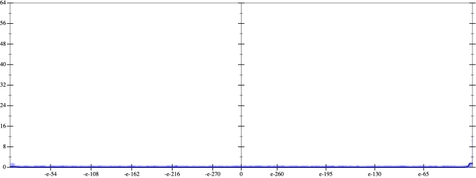
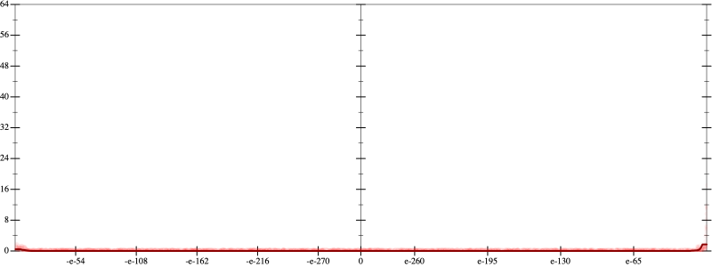
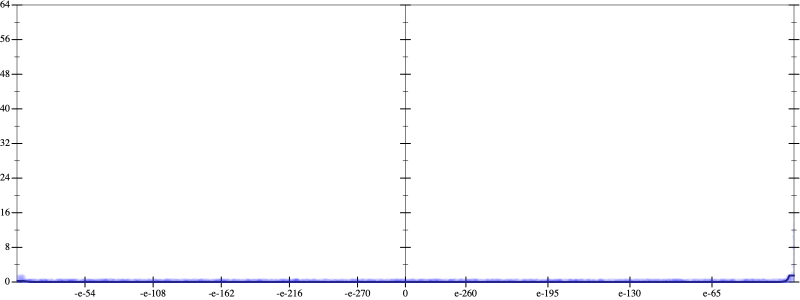

Initial program 0.0
\[\left(\left(\left(\left(\left(\left(\left(\left(\left(\left(\left(\left(\left(\left(\left(\left(\left(1.0 + -35.0 \cdot x\right) + 297.5 \cdot \left(x \cdot x\right)\right) + -1090.833333 \cdot \left(\left(x \cdot x\right) \cdot x\right)\right) + 2181.666667 \cdot \left(\left(\left(x \cdot x\right) \cdot x\right) \cdot x\right)\right) + -2705.266667 \cdot \left(\left(\left(\left(x \cdot x\right) \cdot x\right) \cdot x\right) \cdot x\right)\right) + 2254.388889 \cdot \left(\left(\left(\left(\left(x \cdot x\right) \cdot x\right) \cdot x\right) \cdot x\right) \cdot x\right)\right) + -1334.230159 \cdot \left(\left(\left(\left(\left(\left(x \cdot x\right) \cdot x\right) \cdot x\right) \cdot x\right) \cdot x\right) \cdot x\right)\right) + 583.725694 \cdot \left(\left(\left(\left(\left(\left(\left(x \cdot x\right) \cdot x\right) \cdot x\right) \cdot x\right) \cdot x\right) \cdot x\right) \cdot x\right)\right) + -194.575231 \cdot \left(\left(\left(\left(\left(\left(\left(\left(x \cdot x\right) \cdot x\right) \cdot x\right) \cdot x\right) \cdot x\right) \cdot x\right) \cdot x\right) \cdot x\right)\right) + 50.58956 \cdot \left(\left(\left(\left(\left(\left(\left(\left(\left(x \cdot x\right) \cdot x\right) \cdot x\right) \cdot x\right) \cdot x\right) \cdot x\right) \cdot x\right) \cdot x\right) \cdot x\right)\right) + -10.452388 \cdot \left(\left(\left(\left(\left(\left(\left(\left(\left(\left(x \cdot x\right) \cdot x\right) \cdot x\right) \cdot x\right) \cdot x\right) \cdot x\right) \cdot x\right) \cdot x\right) \cdot x\right) \cdot x\right)\right) + 1.742065 \cdot \left(\left(\left(\left(\left(\left(\left(\left(\left(\left(\left(x \cdot x\right) \cdot x\right) \cdot x\right) \cdot x\right) \cdot x\right) \cdot x\right) \cdot x\right) \cdot x\right) \cdot x\right) \cdot x\right) \cdot x\right)\right) + -0.237086 \cdot \left(\left(\left(\left(\left(\left(\left(\left(\left(\left(\left(\left(x \cdot x\right) \cdot x\right) \cdot x\right) \cdot x\right) \cdot x\right) \cdot x\right) \cdot x\right) \cdot x\right) \cdot x\right) \cdot x\right) \cdot x\right) \cdot x\right)\right) + 0.026612 \cdot \left(\left(\left(\left(\left(\left(\left(\left(\left(\left(\left(\left(\left(x \cdot x\right) \cdot x\right) \cdot x\right) \cdot x\right) \cdot x\right) \cdot x\right) \cdot x\right) \cdot x\right) \cdot x\right) \cdot x\right) \cdot x\right) \cdot x\right) \cdot x\right)\right) + -0.002484 \cdot \left(\left(\left(\left(\left(\left(\left(\left(\left(\left(\left(\left(\left(\left(x \cdot x\right) \cdot x\right) \cdot x\right) \cdot x\right) \cdot x\right) \cdot x\right) \cdot x\right) \cdot x\right) \cdot x\right) \cdot x\right) \cdot x\right) \cdot x\right) \cdot x\right) \cdot x\right)\right) + 0.000194 \cdot \left(\left(\left(\left(\left(\left(\left(\left(\left(\left(\left(\left(\left(\left(\left(x \cdot x\right) \cdot x\right) \cdot x\right) \cdot x\right) \cdot x\right) \cdot x\right) \cdot x\right) \cdot x\right) \cdot x\right) \cdot x\right) \cdot x\right) \cdot x\right) \cdot x\right) \cdot x\right) \cdot x\right)\right) + -1.3 \cdot 10^{-05} \cdot \left(\left(\left(\left(\left(\left(\left(\left(\left(\left(\left(\left(\left(\left(\left(\left(x \cdot x\right) \cdot x\right) \cdot x\right) \cdot x\right) \cdot x\right) \cdot x\right) \cdot x\right) \cdot x\right) \cdot x\right) \cdot x\right) \cdot x\right) \cdot x\right) \cdot x\right) \cdot x\right) \cdot x\right) \cdot x\right)\right) + 10^{-06} \cdot \left(\left(\left(\left(\left(\left(\left(\left(\left(\left(\left(\left(\left(\left(\left(\left(\left(x \cdot x\right) \cdot x\right) \cdot x\right) \cdot x\right) \cdot x\right) \cdot x\right) \cdot x\right) \cdot x\right) \cdot x\right) \cdot x\right) \cdot x\right) \cdot x\right) \cdot x\right) \cdot x\right) \cdot x\right) \cdot x\right) \cdot x\right)\]
Applied simplify0.0
\[\leadsto \color{blue}{\left(\left(-1.3 \cdot 10^{-05} \cdot x\right) \cdot \left(\left(\left(\left(\left(x \cdot x\right) \cdot \left(x \cdot x\right)\right) \cdot \left(\left(x \cdot x\right) \cdot \left(x \cdot x\right)\right)\right) \cdot \left(\left(x \cdot x\right) \cdot \left(x \cdot x\right)\right)\right) \cdot \left(\left(x \cdot x\right) \cdot \left(x \cdot x\right)\right)\right) + \left(\left(\left(\left(\left(x \cdot x\right) \cdot \left(x \cdot x\right)\right) \cdot \left(\left(x \cdot x\right) \cdot \left(x \cdot x\right)\right)\right) \cdot \left(\left(x \cdot x\right) \cdot \left(x \cdot x\right)\right)\right) \cdot \left(\left(x \cdot x\right) \cdot \left(x \cdot x\right)\right)\right) \cdot \left(\left(x \cdot x\right) \cdot 10^{-06}\right)\right) + \left(\left(\left(\left(\left(\left(2181.666667 \cdot x\right) \cdot {x}^{3} + \left(-2705.266667 \cdot x\right) \cdot \left(\left(x \cdot x\right) \cdot \left(x \cdot x\right)\right)\right) + \left(\left(\left(x \cdot x\right) \cdot \left(x \cdot -1090.833333\right) + 1.0\right) + x \cdot \left(-35.0 + x \cdot 297.5\right)\right)\right) + \left(\left(\left(x \cdot x\right) \cdot \left(x \cdot x\right)\right) \cdot \left(\left(x \cdot x\right) \cdot 2254.388889\right) + \left(\left({x}^{3} \cdot {x}^{3}\right) \cdot \left(\left(x \cdot x\right) \cdot 583.725694\right) + \left(-1334.230159 \cdot x\right) \cdot \left({x}^{3} \cdot {x}^{3}\right)\right)\right)\right) + \left(\left(\left(\left(\left(x \cdot x\right) \cdot \left(x \cdot x\right)\right) \cdot \left(\left(x \cdot x\right) \cdot \left(x \cdot x\right)\right)\right) \cdot \left(x \cdot -194.575231\right) + \left(\left(\left(x \cdot x\right) \cdot \left(x \cdot x\right)\right) \cdot \left(\left(x \cdot x\right) \cdot \left(x \cdot x\right)\right)\right) \cdot \left(\left(x \cdot x\right) \cdot 50.58956\right)\right) + \left(\left(\left({x}^{3} \cdot {x}^{3}\right) \cdot {x}^{3}\right) \cdot \left(\left(x \cdot x\right) \cdot -10.452388\right) + \left(\left({x}^{3} \cdot {x}^{3}\right) \cdot \left(\left(x \cdot x\right) \cdot \left(x \cdot x\right)\right)\right) \cdot \left(\left(x \cdot x\right) \cdot 1.742065\right)\right)\right)\right) + \left(\left(\left(\left(\left(\left(x \cdot x\right) \cdot \left(x \cdot x\right)\right) \cdot \left(\left(x \cdot x\right) \cdot \left(x \cdot x\right)\right)\right) \cdot \left(\left(x \cdot x\right) \cdot \left(x \cdot x\right)\right)\right) \cdot \left(\left(x \cdot x\right) \cdot 0.026612\right) + \left(\left(\left(\left(x \cdot x\right) \cdot \left(x \cdot x\right)\right) \cdot \left(\left(x \cdot x\right) \cdot \left(x \cdot x\right)\right)\right) \cdot \left(\left(x \cdot x\right) \cdot \left(x \cdot x\right)\right)\right) \cdot \left(x \cdot -0.237086\right)\right) + \left(\left(\left(\left({x}^{3} \cdot {x}^{3}\right) \cdot \left(\left(x \cdot x\right) \cdot \left(x \cdot x\right)\right)\right) \cdot \left(\left(x \cdot x\right) \cdot \left(x \cdot x\right)\right)\right) \cdot \left(\left(x \cdot x\right) \cdot 0.000194\right) + \left(-0.002484 \cdot x\right) \cdot \left(\left(\left({x}^{3} \cdot {x}^{3}\right) \cdot \left(\left(x \cdot x\right) \cdot \left(x \cdot x\right)\right)\right) \cdot \left(\left(x \cdot x\right) \cdot \left(x \cdot x\right)\right)\right)\right)\right)\right)}\]
 
